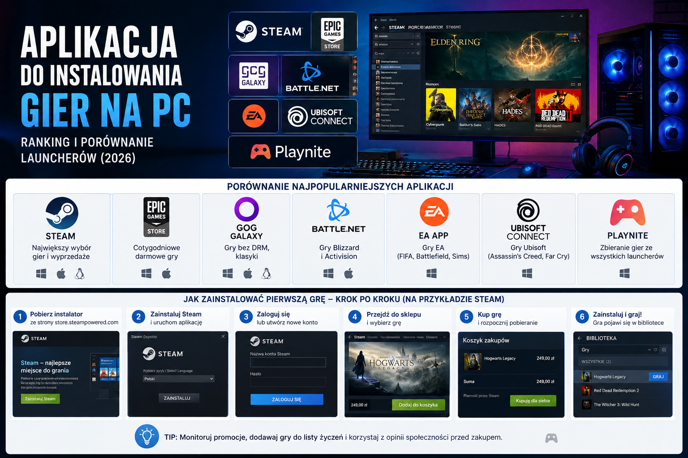

Steam
Największy wybór gier, chmura zapisów, lista życzeń, forum społeczności, Warsztat Steam i lokalne udostępnianie gier. Minusem może być cięższy klient na starszych komputerach.
Steam, Epic Games Store, GOG Galaxy, Battle.net, EA app, Ubisoft Connect czy Playnite? Sprawdź, która aplikacja pasuje do Twojej biblioteki i jak zainstalować pierwszą grę.

Siedem najważniejszych narzędzi opisanych w artykule — od największego sklepu po agregator bibliotek.
| Aplikacja | Najlepsza dla | Darmowa? | DRM | System |
|---|---|---|---|---|
| Steam | Największy wybór gier i wyprzedaże | Tak (płacisz za gry) | Tak | Windows, macOS, Linux |
| Epic Games Store | Cotygodniowe darmowe gry | Tak | Tak | Windows, macOS |
| GOG Galaxy | Gry bez DRM, klasyki | Tak | Nie | Windows, macOS, Linux |
| Battle.net | Gry Blizzard i Activision | Tak | Tak | Windows, macOS |
| EA app | Gry EA (FIFA, Battlefield, Sims) | Tak | Tak | Windows |
| Ubisoft Connect | Gry Ubisoft (Assassin’s Creed, Far Cry) | Tak | Tak | Windows |
| Playnite | Zbieranie gier ze wszystkich launcherów | Tak, open source | Nie dotyczy | Windows |
Najważniejsze zalety i ograniczenia każdej aplikacji, zgodnie z artykułem.
Największy wybór gier, chmura zapisów, lista życzeń, forum społeczności, Warsztat Steam i lokalne udostępnianie gier. Minusem może być cięższy klient na starszych komputerach.
Popularność zbudował wokół cotygodniowych darmowych gier. Oferuje listy życzeń, chmurę zapisów i rozwijającą się integrację z modami, ale ma mniej funkcji społecznościowych niż Steam.
Sklep zachowuje filozofię gier bez DRM. Kupioną grę można pobrać jako instalator i uruchomić bez logowania do internetu. Galaxy działa też jako agregator bibliotek.
Obsługuje m.in. World of Warcraft, Diablo IV, Overwatch 2 i Call of Duty. Jest lekki i szybko pobiera aktualizacje, ale ma ograniczoną bibliotekę.
Klient dla produkcji EA, takich jak EA Sports FC, Battlefield, The Sims i Apex Legends. EA Play daje dostęp do katalogu starszych gier za miesięczną opłatą.
Obsługuje Assassin’s Creed, Far Cry, Rainbow Six i Watch Dogs. System nagród pozwala odblokowywać dodatkowe przedmioty kosmetyczne za osiągnięcia.
Darmowy, open source’owy menedżer bibliotek. Łączy gry ze Steama, Epic, GOG, Battle.net, EA app i Ubisoft Connect w jednym widoku, a także obsługuje emulatory i motywy społecznościowe.
Przykład ze Steam. Ten sam ogólny schemat powtarza się w niemal każdym launcherze.
Pobierz instalator ze strony Steam i uruchom plik.
Podaj e-mail, nazwę użytkownika i hasło oraz potwierdź konto.
Zainstaluj Steam i zaloguj się w aplikacji.
Użyj wyszukiwarki albo przeglądaj kategorie sklepu.
Dodaj płatną lub darmową grę do swojej biblioteki.
Wybierz grę i kliknij „Zainstaluj”.
Wskaż dysk i folder oraz sprawdź ilość wolnego miejsca.
Poczekaj na pobieranie, a następnie uruchom grę przyciskiem „Graj”.
Nie ma jednej uniwersalnej odpowiedzi. Dla ogólnego użytku artykuł wskazuje Steam ze względu na największy katalog i obsługę trzech systemów operacyjnych.
Jeśli grasz w tytuły różnych wydawców, tak. Playnite pozwala zebrać je w jednym widoku, ale oryginalne launchery nadal muszą być zainstalowane.
Tak, o ile pobierasz je z oficjalnych stron producentów. Artykuł zaleca unikanie wersji z nieoficjalnych stron trzecich.
Przy grach z GOG — tak, ponieważ sklep oferuje instalatory bez DRM. Przy Steam, Epic czy Battle.net launcher jest wymagany do uruchomienia i weryfikacji licencji.
Nie. Playnite jest darmowym projektem open source i nie wymaga opłat ani zakładania konta.
Zacznij od Steam, jeśli dopiero wchodzisz w PC gaming. Epic Games Store i GOG Galaxy warto dołożyć dla darmowych tytułów i gier bez DRM. Battle.net, EA app oraz Ubisoft Connect zainstalujesz wtedy, gdy potrzebujesz gier konkretnego wydawcy. Gdy launcherów zrobi się za dużo, Playnite może posłużyć jako jedno, przejrzyste miejsce startu.